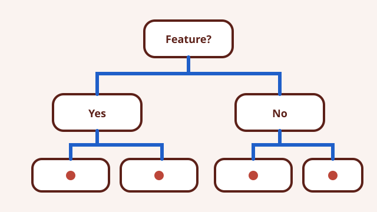
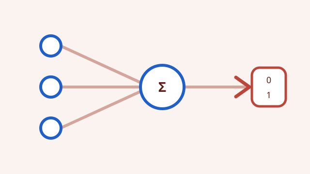
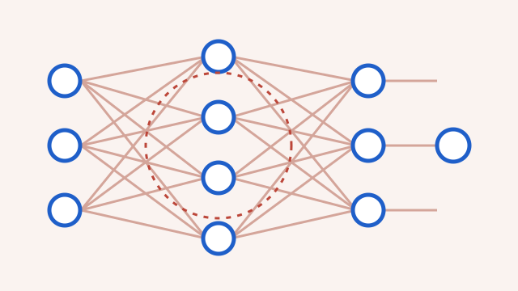
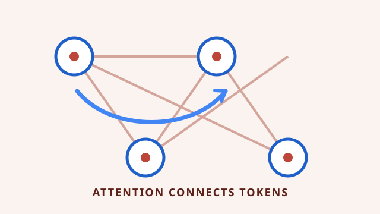

Decision Trees
Follow a sequence of questions to see how a tree makes a prediction.
Lets see what piques your interest!
Pick one of the various models that paved the way for modern Machine Learning, Neural Networks, and Deep Learning!
 Linear Regression
Adjust slope and intercept to see how a straight line models continuous data.
Open lesson
Linear Regression
Adjust slope and intercept to see how a straight line models continuous data.
Open lesson

Explore how a model estimates the chance that something belongs to a class.
Open lessonObserve how Naive Bayes can allow us to filter spam mail!
Open lesson
Follow a sequence of questions to see how a tree makes a prediction.

See how data points gather into groups around moving centres.
See how PCA captures the most variation in data and projects it into fewer dimensions.
Explore how an SVM chooses a decision boundary with the widest margin between classes.
Lets take a walk down memory lane!
Follow the ideas from the first mathematical neuron through perceptrons, deep learning, and the attention-based models behind today’s language systems.

McCulloch and Pitts described a simple mathematical model of how a neuron could combine signals.

Rosenblatt’s perceptron adjusts its weights from examples to make a binary prediction.

A layer of output neurons can learn several decisions, but each decision boundary is still linear.

Hidden layers let networks combine simple features into more complex, non-linear patterns.

A practical method sends prediction error backward so a network can adjust weights across its layers.

Convolutional layers reuse small filters to find visual patterns such as edges, shapes, and objects.

Recurrent connections carry information over time; LSTM introduced a way to preserve useful context.

Improved training, larger datasets, and faster hardware made deep networks highly effective.

Self-attention lets each token use information from other parts of a sequence, powering modern language models.